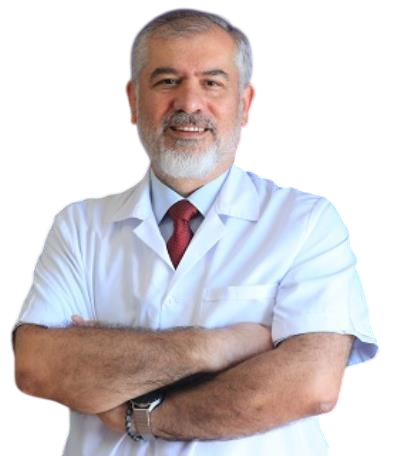
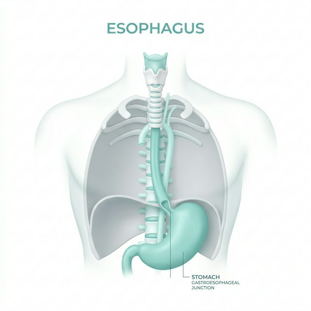
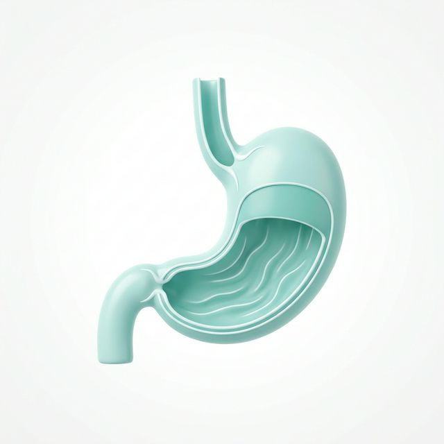
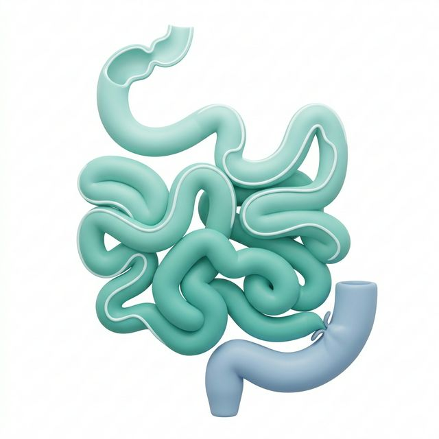
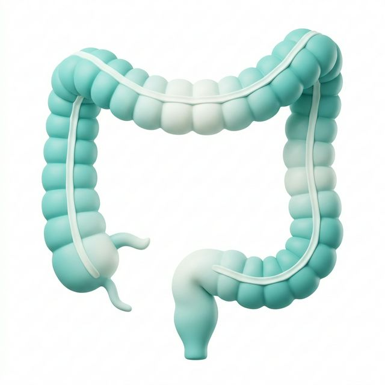
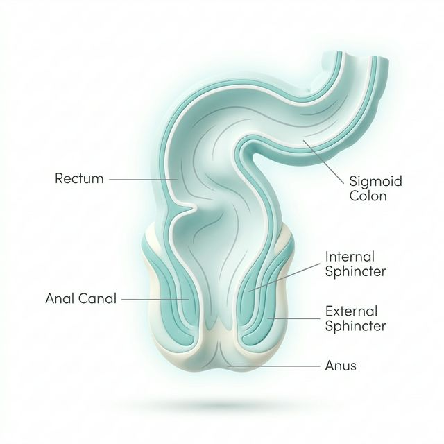
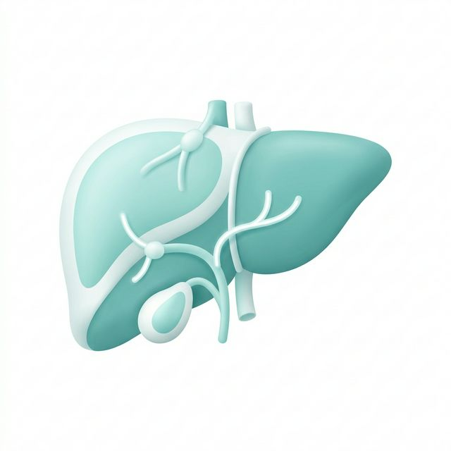
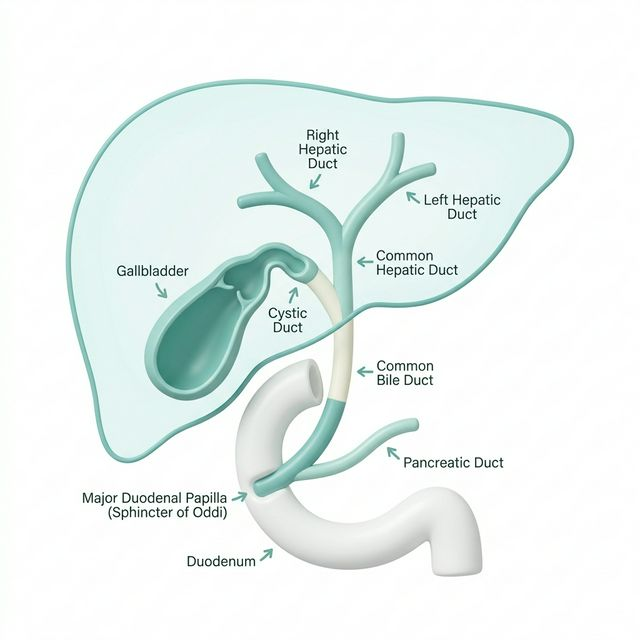
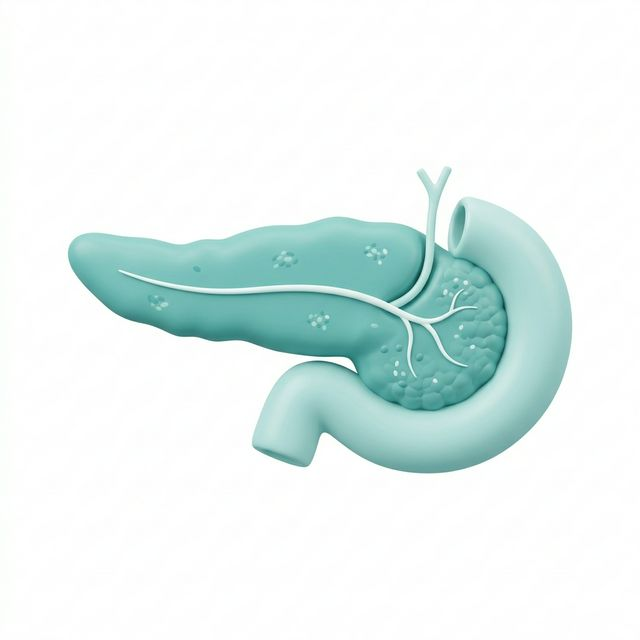

Akademik Vizyon,
Klinik Uzmanlık
Gastroenteroloji ve İç Hastalıkları alanında kanıta dayalı tıp ilkeleri ışığında, etik değerlere bağlı tanı ve tedavi hizmetleri.

Bilimsel Yaklaşım, İnsani Dokunuş
Akademik Yolculuk
1969 Karabük doğumluyum. Hekimlik yolculuğuma, 1986 yılında adım attığım
Ankara Üniversitesi Tıp Fakültesi’nde başladım ve 1992 yılında bu köklü
kurumdan mezun olarak meslek hayatıma ilk adımı attım.
İç hastalıkları alanındaki
uzmanlık eğitimimi 1992-1998 yılları arasında Gazi Üniversitesi Tıp Fakültesi İç
Hastalıkları Anabilim Dalı’nda tamamlayarak Dahiliye Uzmanı oldum. Klinik ilgi
alanlarımı daha spesifik bir boyuta taşımak amacıyla, 1999-2001 yılları arasında
Başkent Üniversitesi Tıp Fakültesi bünyesinde
Gastroenteroloji yandal uzmanlık eğitimimi bitirdim. 2001 yılından itibaren
akademik ve klinik çalışmalarımı Zonguldak Bülent Ecevit Üniversitesi
çatısı altında sürdürmekteyim. Bu süreçte yürüttüğüm bilimsel çalışmalar neticesinde;
- • 2006 yılında Gastroenteroloji alanında Doçent,
- • 2011 yılında ise Profesör unvanını aldım.
Halen aynı üniversitenin İç Hastalıkları Anabilim Dalı ve Gastroenteroloji Bilim Dalı bünyesinde öğretim üyesi olarak görev yapmaktayım. Akademik sorumluluklarımın yanı sıra, klinik pratiğimle hastalarıma hizmet vermeye ve bilgi birikimimi geleceğin hekimlerine aktarmaya kararlılıkla devam ediyorum.
Tedavi Felsefem
Kanıta Dayalı Tıp
En güncel bilimsel veriler ışığında, uluslararası kılavuzlara uygun tedavi protokolleri.
Hasta Odaklılık
Hastalık yoktur, hasta vardır. Her bireyin biyolojik yapısı ve yaşam tarzı biriciktir.
Tıbbi İlgi Alanları
Gastroenteroloji pratiğinde derinleştiğim başlıca alanlar. Detaylı bilgi almak için aşağıdaki kartlara tıklayınız.

Özofagus
• Reflü hastalığı: Mide asidinin yukarı kaçmasıyla göğüste yanma ve ağza acı su gelmesi olur.
• Barrett özofagusu: Uzun süreli reflü sonucu yemek borusunda hücre değişiklikleri oluşabilir.
• Yemek borusu kanseri: Yutma zorluğu ve kilo kaybı ile kendini gösterebilir.

Mide
• Gastrit: Mide iç yüzeyinin iltihaplanmasıdır; genellikle bir bakteri (Helicobacter pylori) neden olur.
• Ülser: Midede ya da onikiparmak bağırsağında yara oluşmasıdır; ağrı ve bazen kanama yapabilir.
• Mide kanseri: Başlangıçta belirti vermeyebilir; ilerledikçe kilo kaybı ve iştahsızlık görülür.

İnce Bağırsak
• Çölyak hastalığı: Gluten içeren yiyeceklere karşı hassasiyet sonucu emilim bozulur.
• Crohn hastalığı: Bağırsakta iltihaplanmaya yol açar, karın ağrısı ve ishal yapabilir.
• Bağırsak tıkanıklığı: Bağırsak içeriği ilerleyemez; kusma ve şişkinlik olur.

Kalın Bağırsak
• Ülseratif kolit: Bağırsakta iltihaplanma olur; kanlı ishal görülebilir.
• Kolon kanseri: Genellikle yavaş gelişir; erken teşhis önemlidir.
• Divertikül hastalığı: Bağırsakta küçük kesecikler oluşur; iltihaplanırsa ağrı yapar.

Rektum ve Anüs
• Hemoroid (basur): Makat bölgesinde damarların şişmesi; ağrı ve kanama yapabilir.
• Anal fissür: Makatta çatlak oluşması; tuvalet sırasında şiddetli ağrı olur.
• Rektum kanseri: Kanama ve dışkılama alışkanlığında değişiklikle fark edilebilir.

Karaciğer
• Hepatit B ve C: Karaciğeri etkileyen virüslerdir; uzun vadede ciddi hasara yol açabilir.
• Yağlı karaciğer: Karaciğerde yağ birikmesi; genellikle beslenme ve kilo ile ilişkilidir.
• Siroz: Karaciğerin sertleşmesi ve görevini yapamaz hale gelmesidir.

Safra Kesesi
• Safra taşı: Safra kesesinde taş oluşur; ani karın ağrısı yapabilir.
• Safra kesesi iltihabı: Genellikle taşlara bağlı gelişir.
• Safra yolu enfeksiyonu: Ateş, sarılık ve ağrı ile ortaya çıkar.

Pankreas
• Akut pankreatit: Ani başlayan, şiddetli karın ağrısı ile seyreden iltihaptır.
• Kronik pankreatit: Uzun süren hasar sonucu sindirim sorunları gelişir.
• Pankreas kanseri: Genellikle geç belirti verir; sarılık önemli bir bulgudur.
Tanı ve Tedavi İşlemleri
Gastroenteroloji ve hepatoloji alanında uyguladığım başlıca tanısal ve tedavi amaçlı işlemler.
Endoskopi
Ağızdan ince bir kamera ile girilerek yemek borusu, mide ve onikiparmak bağırsağı incelenir. Reflü, gastrit, ülser, kanama, polip ve kanser tespitinde kullanılır.
Kolonoskopi
Makattan girilen kamera ile kalın bağırsak değerlendirilir. Polip, kanser ve iltihaplı bağırsak hastalıklarını tespit etmek için kullanılır.
Endoskopik Biyopsi
Endoskopi sırasında küçük doku parçaları alınır. Kanser, çölyak veya enfeksiyon gibi hastalıkların kesin tanısı konur.
Endoskopik Ultrason
Endoskopi ile ultrasonun birleşmiş halidir. Pankreas, safra yolları ve tümörlerin detaylı incelenmesini sağlar.
ERCP
Ağızdan girilerek safra yollarına ulaşılır. Safra taşları çıkarılır, tıkanıklıklar açılır ve stent yerleştirilir.
Ultrasonografi
Ses dalgaları kullanılarak karın içi organlar (karaciğer, safra kesesi, pankreas, böbrekler) görüntülenir. Ağrısız ve radyasyon içermeyen güvenli bir tanı yöntemidir.
Polipektomi
Kolonoskopi sırasında bağırsaktaki polipler çıkarılır. Kansere dönüşme riski azaltılmış olur.
Kanama Durdurma
Mide veya bağırsak kanamalarında endoskopi ile müdahale edilir. Klips, enjeksiyon veya yakma yöntemleri kullanılır.
Stent Takılması
Daralan yemek borusu, safra yolu veya bağırsak içine tüp yerleştirilir. Geçişin yeniden sağlanmasına yardımcı olur.
Yabancı Cisim Çıkarılması
Yutulan cisimler endoskopi ile güvenle çıkarılır. Özellikle acil durumlarda hayat kurtarıcı bir işlemdir.
Deneyim &
Liyakat
Tıp eğitimine adanmış 25 yıl. Asistanlıktan profesörlüğe uzanan, binlerce hasta hikayesiyle dolu bir yolculuk.
Profesör Doktor
Zonguldak Bülent Ecevit Üniversitesi
Tıp Fakültesi Dahili Tıp Bilimleri Bölümü / İç Hastalıkları
Doçent Doktor
Zonguldak Bülent Ecevit Üniversitesi
Tıp Fakültesi Dahili Tıp Bilimleri Bölümü
Yardımcı Doçent Doktor
Zonguldak Bülent Ecevit Üniversitesi
Tıp Fakültesi Dahili Tıp Bilimleri Bölümü
Yandal Uzmanlık Eğitimi
Başkent Üniversitesi Tıp Fakültesi
Gastroenteroloji. Tez: Hemodiyaliz hastalarında H pylori antibiyotik direnci.
Tıpta Uzmanlık Eğitimi
Gazi Üniversitesi Tıp Fakültesi
İç Hastalıkları. Tez: Yeni tanı lenfomalı hastalarda hepatit C virüs prevalansı.
Lisans Eğitimi
Ankara Üniversitesi Tıp Fakültesi
Tıp Doktoru
İletişime Geçin
Sağlığınızla ilgili sorularınız, randevu talepleriniz için kliniğimize ulaşabilirsiniz.